el arte quimérico de boleslaw biegas
siguiendo el hilo del arte quimérico que tanto me gusta, en una de mis búsquedas visuales me he topado con la magia de bolesław biegas. en concreto hay una época de su vida que me ha dejado como hechizada, esa en la que pinta imágenes y escenas mágicas y grotescas, castillos que brillan de noche y mujeres brillantes y guapísimas.
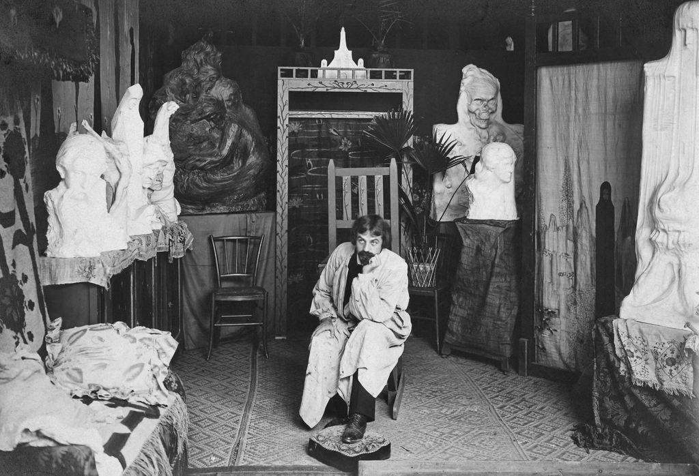
empiezo por el principio porque el principio es lo que más se relaciona con su arte mas encantada y quiero contaros que él no era nada más que un niño de un pueblo de mazovia, koziczyn, cerca de ciechanów, nacido en 1877 en una familia de campesinos pobres, que a los siete años ya está cuidando vacas con barro hasta los tobillos y quién sabe cuánta mierda seca y sangre de mosquitos en las uñas, y que se queda huérfano, se le mueren el padre la madre y un hermano, y lo meten de aprendiz con un carpintero. el destino tuvo piedad de él… bueno, el destino y un cura de pueblo que vio lo que hacía con la madera, y un médico, y un escritor de varsovia que lo llamó el nuevo giotto y sacó dinero de nosesabedonde para mandarlo a estudiar. porque ese niño se muere en parís en 1954 siendo escultor, pintor, y encima autor de dieciséis obras de teatro. a mí eso me parece más mágico que cualquier cuento, pasar de oler a granja a tener un museo con tu nombre. yo nunca he barrido mierda pero sí me gustaría tener mi nombre colgado debajo de alguna obra. Dónde estarán mi cura, mi médico y mi profesor rico y generoso?
se llamaba biegalski. el biegas se lo hizo él. me gusta eso, cortarse el apellido como quien se corta el pelo después de una ruptura. yo de pequeña pensé en cambiarme el nombre antes de empezar la escuela primaria, me quería llamar vanessa como mi profesora de gimnasia porque tenía el pelo rizado y yo también quería el pelo rizado pero lo tenía liso liso liso, y estaba segura de que con cambiarme el nombre me habría cambiado hasta por dentro, genéticamente, y se me habría rizado el pelo y la personalidad también y habría tenido más coraje en la vida.
estudió talla de madera en varsovia, luego entró en la academia de bellas artes de cracovia y de ahí lo echaron en 1901 por una escultura que se llamaba el libro de la vida, demasiado rara al parecer, porque en la academia se enseñaba a hacer cuerpos como se habían hecho siempre, músculo por músculo, y él ya estaba simplificando, cuadrando las formas, dejándolas casi geométricas, cuando nadie hacía eso todavía. y lo que contaba con ellas tampoco gustó, el escándalo fue por cómo estaba hecha y por lo que decía. lo llamaron destructor de la academia. a un chico de pueblo de veinticuatro años. y ese mismo año, el mismo, le aceptan obra en la exposición de la secesión de viena, el único escultor de tierras polacas que entró. o sea que en casa te echan por raro y fuera te aplauden por lo mismo, y él hizo lo único que se podía hacer: se fue a parís y no volvió nunca. es de decir que veo un patrón con mi vida, aunque no me guste compararme con los hombres ni compartir nada mío con ellos.
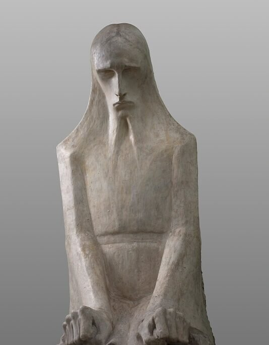
libro de la vida, réplica del 1903
llega la guerra, la primera, la del barro y las trincheras y los pies podridos dentro de las botas y el miedo y la incertidumbre. y biegas en vez de pintar soldados pinta vampiros. pero no vampiros de capa y colmillo de esos de película, sino con forma de dragón, de serpiente, de insecto, vampiros elefante, vampiros camello con alas, un bestiario entero de monstruos chupasangre. a mí las quimeras me pierden, cualquier bicho hecho con pedazos de otros bichos me tiene ganada, y estos chupan porque son la verdad de lo que estaba pasando, la que ningún retrato de general con medallas te iba a contar. la serie se llama los vampiros de la guerra, la pintó entre 1914 y 1918. hay uno de 1916 que se llama el beso del vampiro. dicen que la serie hablaba también de la otra guerra, la de los hombres contra las mujeres. no me extrañaría la verdad.
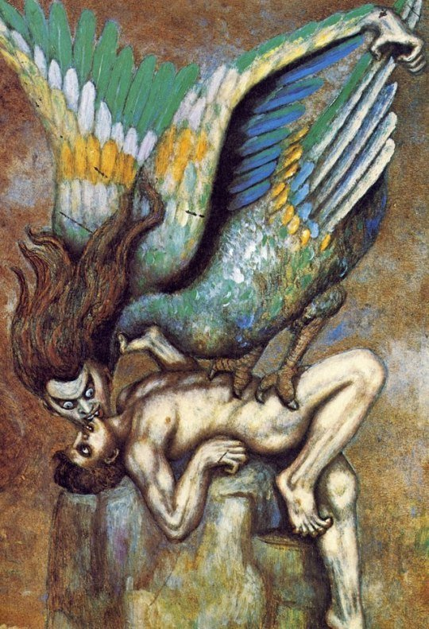
El beso del vampiro, 1916
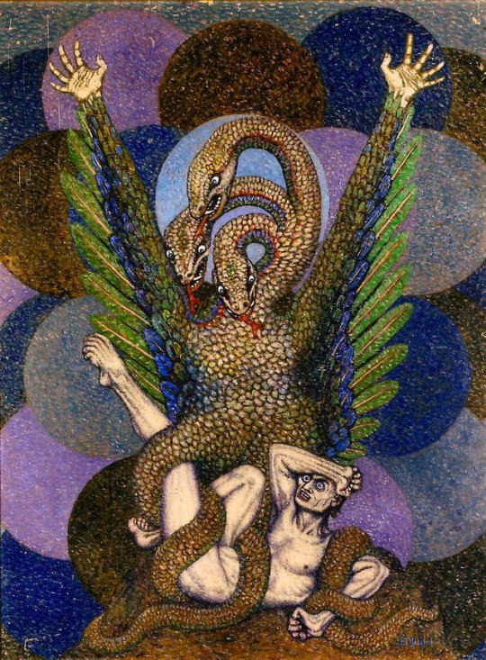
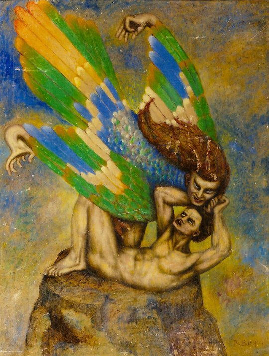
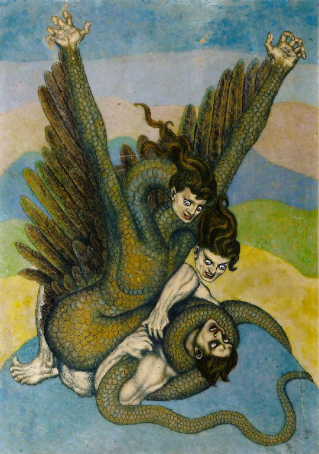
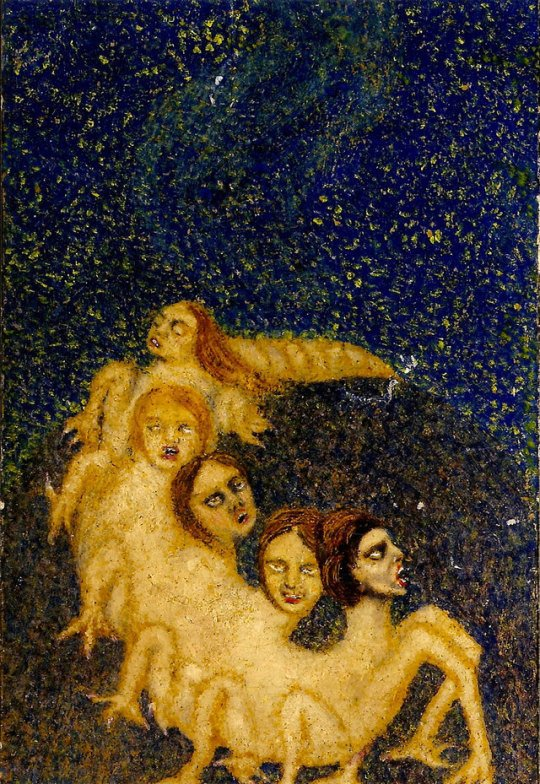
en orden:
Vampiros de la lucha irónica, 1915–1916
El vampiro en forma de dragón, 1917
El vampiro en forma de aliado, 1915-1916
El vampiro en forma de serpiente, 1916–1917
pero esta no es la fase de su vida creativa de la que quiero hablar hoy, sino una que llega unos años más tarde, en los veinte, cuando la guerra ya ha terminado y él se encierra en parís a pintar otro mundo maravilloso.
el ciclo se llama la mística del infinito y lo pintó entre 1923 y 1929, y los que viven ahí dentro son siempre los mismos, como una compañía de teatro que cambia de decorado pero no de actores. hay castillos y palacios encima de rocas, que brillan de noche.
hay pegasos, caballos con alas que se quedan quietos encima de las torres como perros de guardia. hay cisnes, como el de leda. hay diosas pequeñas y solitarias y mujeres desnudas, rubias, diminutas al lado de todo lo demás, que no se sabe si son princesas encerradas o las dueñas del sitio. hay caballeros que no luchan contra nadie, solo están ahí, como si esperaran algo. hay venus, la diosa del amor, y hay titanes hechos de niebla y de tormenta. hay grutas y templos donde el agua y la piedra se juntan, y cipreses negros alrededor de todo, como centinelas. y hay demonios también, como el demonio de la esfera terrestre que esculpió en yeso en 1924, porque la belleza en biegas nunca viene sola. pero aquí los animales ya no muerden. son cándidos, son puros, y están para cuidar.
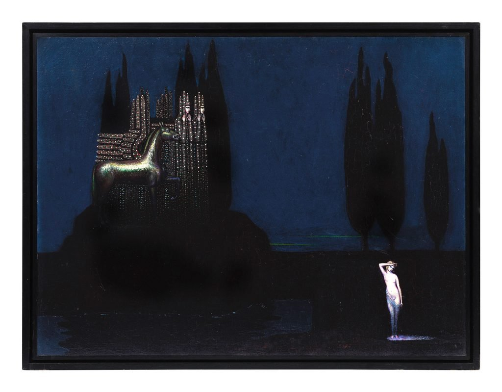
Castillo del caballo misterioso, 1924
en el castillo del caballo misterioso, de 1924, hay un pegaso de bronce encima de una ciudadela con el ojo bien abierto y la boca torcida, unos cipreses negros alrededor como centinelas, como llamas negras, y abajo a la derecha una mujer desnuda, pequeñita, rubia, que brilla. el monstruo ya no se come a nadie, guarda. es como si después de pintar el mundo devorándose a sí mismo hubiera necesitado inventarse un sitio donde alguien te cuida mientras duermes. y eso yo lo entiendo demasiado bien.
no le salió de la nada. ya en 1906 apollinaire vio sus cuadros en el salón de los independientes y dijo que eran lo más profundo de toda la exposición, que ahí había un alma. y él miraba a böcklin, el de la isla de los muertos, esa isla de roca y cipreses a la que llevan a alguien en barca, y a odilon redon, que pintaba como entre niebla. de los dos cogió cosas y las mezcló a su manera, la seriedad de los mitos y la bruma de los sueños, pero con algo muy suyo, que sus colores no son niebla, son duros, como esmalte, como si brillaran desde dentro. estos castillos los enseñó en la galería seligmann en 1925 y en bernheim-jeune en 1929, y un crítico de entonces, gustave kahn, los describió como un poema para meditar, un poema de mucha soledad.
yo la verdad que lloro.
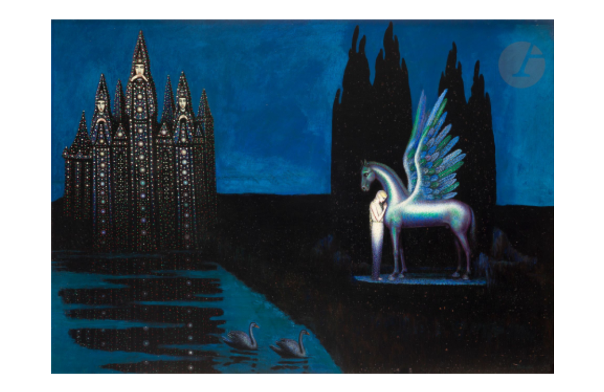
Venus y Pegaso, c. 1925
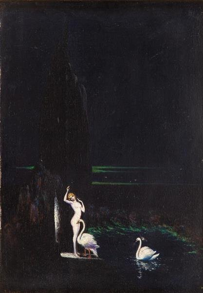
Leda, 1928
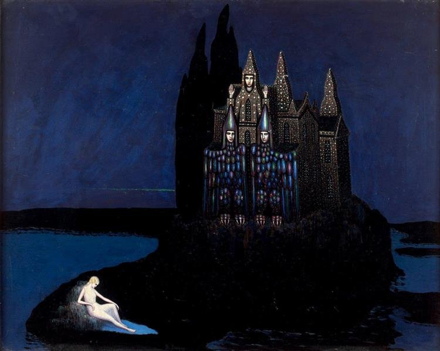
El castillo de la pequeña diosa solitaria
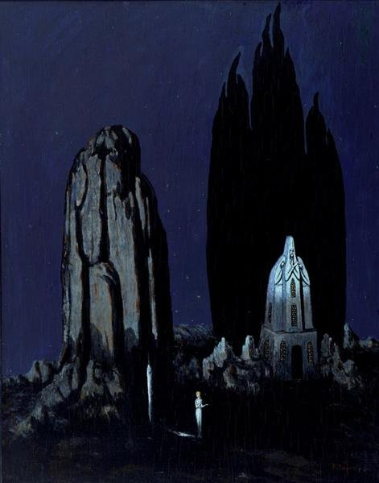
El templo del misterio de la gruta, 1937
la luz es lo que más me ha hechizado. en estos cuadros la luz no viene de ningún sol ni de ninguna lámpara, sale de las cosas, del pegaso, del pelo de la mujer, de las paredes del castillo, una luz blanca, fosforescente, y alrededor todo es azul de medianoche y negro de ciprés y a veces un verde ácido al fondo que no sabes si es el amanecer o la puerta de otro mundo. me encanta esa luz, que no está para que veas mejor, está para que sepas que lo que miras no es de aquí.
yo me pondría la leda colgado en la pared del pasillo. si pudiera entrar ahora donde está conservado y robármelo en un parpadeo, sin que nadie lo supiera, menos él mismísimo autor, que seguro me mira a través de su alma desde algún lado, quizás desde dentro del mismo cuadro, me lo llevaría para acordarme de que los monstruos también se pueden pintar bonitos y que a veces lo que da miedo es justo lo que te cuida. aunque ni siquiera sé dónde está, en 2025 se vendió en una subasta y desde entonces vive en casa de alguien que no conozco. ojalá ese alguien lo mire de noche con la luz apagada, que es como hay que mirarlo.
Como siempre, muchas gracias por leerme <3